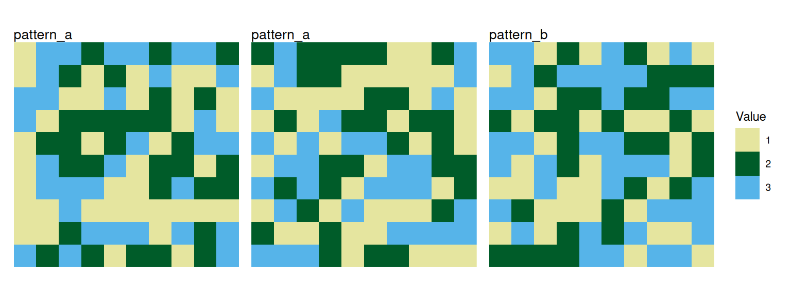

library(patternscaper)
set.seed(123456)Convert your own categorical land-cover matrices or rasters into landscape objects for model training or classification. If you are new to the package, begin with Get started with patternscaper for an overview of the complete classification workflow.
Input data can be created manually or read from files.
patternscaper functions that use raster landscapes all expect a landscape object or a list of landscape objects. To wrap a matrix or a SpatRaster from the terra R package into a landscape object, use the landscape() function.
Both workflows use categorical land-cover data represented by finite whole-number codes. These codes don’t need to start at zero or be consecutive. This means that you should classify continuous measurements (e.g. elevation, vegetation indices), and raw images into land-cover classes before converting them to landscape objects. Use one categorical land-cover layer per landscape.
The pixel workflow does not support NA cells in the raster. The metric workflow excludes NA cells from the analysed landscape. See Matching training and application data for how missing cells and raster geometry affect the two workflows.
Read or create input data
Read a classified raster file as a SpatRaster with terra::rast():
land_cover_raster <- terra::rast("path/to/classified-land-cover.tif")Alternatively, you can create landscapes directly as a matrix. The examples below create a matrix and a SpatRaster containing the same land-cover values:
For example, the values 1, 2, and 3 in the matrix can represent land-cover classes forest, grassland, and water. Training and application rasters must use the same code for the same land-cover category.
Convert one landscape into a landscape object
Use landscape() to wrap the input data and optionally add metadata:
-
nameidentifies an individual landscape in tables and plots. -
patternis the known spatial pattern class used for model training and performance evaluation.
Both default to NA and can be set during conversion.
Note
For model training, landscapes need a known pattern label. For application landscapes that should be classified, you can leave
patternat its defaultNA.
Wrapping a SpatRaster in a landscape object preserves its cell values, extent, resolution, and coordinate reference system. Data without this spatial information (e.g. from a simple matrix) give a raster with a default cell resolution of 1 and no coordinate reference system.
Printing a landscape object shows its properties:
matrix_landscape
#> Landscape: "Matrix landscape example" [pattern: custom]
#> -----------------------------------------
#> Dimensions: 10x10 (100 cells)
#> Resolution: 1.0x1.0
#> Extent : xmin=0.0, xmax=10.0, ymin=0.0, ymax=10.0
#> Values : min=1.0, max=3.0
#> Parameters: noneUpdate landscape metadata
Names and known pattern labels can also be updated after conversion with set_landscape_name() and set_landscape_pattern():
matrix_landscape <- matrix_landscape |>
set_landscape_name("Landscape 1") |>
set_landscape_pattern("pattern_a")These functions change only the stored metadata. They do not alter the raster cells.
Convert multiple landscapes
Use purrr::map() to convert a list of matrices or rasters. Use purrr::pmap() when names and patterns are supplied as parallel vectors.
landscape_matrices <- list(
matrix1 = matrix(sample(1:3, 100, replace = TRUE), nrow = 10),
matrix2 = matrix(sample(1:3, 100, replace = TRUE), nrow = 10),
matrix3 = matrix(sample(1:3, 100, replace = TRUE), nrow = 10)
)
landscape_names <- c("Landscape 1", "Landscape 2", "Landscape 3")
landscape_patterns <- c("pattern_a", "pattern_a", "pattern_b")
landscape_objects <- purrr::pmap(
list(
data = landscape_matrices,
name = landscape_names,
pattern = landscape_patterns
),
landscape
)After conversion, you can use the landscapes like any other landscape objects in patternscaper. For example, you can plot them with plot_landscapes():
plot_landscapes(landscape_objects)
Next steps
Continue with the guide for one of the classification workflows: